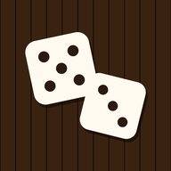
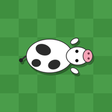

Brody's Biscuits
Swap neighbouring treats to match three or more. Line up three chocolate biscuits to clear the pile. Stuck? Answer a fractions question to earn a lifeline.
PlayHow to install on your phone
iPhone or iPad (use Safari)
- Open this page in Safari and tap Play on Brody's Biscuits.
- Tap the Share button (the square with an arrow pointing up).
- Scroll down and tap Add to Home Screen.
- Tap Add. The biscuit icon is now on your home screen.
Android (use Chrome)
- Open this page in Chrome and tap Play on Brody's Biscuits.
- Tap the ⋮ menu in the top corner.
- Tap Install app (or Add to Home screen).
- Tap Install. The biscuit icon is now on your home screen.

Dice Games
Six dice games in one: Pig, Snake Eyes, 10,000, Ship, Captain & Crew, Shut the Box and Yacht. Play against friends or the computer.
PlayHow to install on your phone
iPhone or iPad (use Safari)
- Open this page in Safari and tap Play on Dice Games.
- Tap the Share button (the square with an arrow pointing up).
- Scroll down and tap Add to Home Screen.
- Tap Add. The dice icon is now on your home screen.
Android (use Chrome)
- Open this page in Chrome and tap Play on Dice Games.
- Tap the ⋮ menu in the top corner.
- Tap Install app (or Add to Home screen).
- Tap Install. The dice icon is now on your home screen.

Max the Stockman
Help Max herd his cows through the gate and out into the pasture, before the aliens' Attractor Beam beams them up.
PlayHow to install on your phone
iPhone or iPad (use Safari)
- Open this page in Safari and tap Play on Max the Stockman.
- Tap the Share button (the square with an arrow pointing up).
- Scroll down and tap Add to Home Screen.
- Tap Add. The cow icon is now on your home screen.
Android (use Chrome)
- Open this page in Chrome and tap Play on Max the Stockman.
- Tap the ⋮ menu in the top corner.
- Tap Install app (or Add to Home screen).
- Tap Install. The cow icon is now on your home screen.